Open Source Ecology Dedicated Project Visit
Call to action (from OSE Wiki): We are building a kit of the 50 most important machines that it takes for modern life to exist - everything from a tractor, to an oven, to regenerative agriculture. Then we create open source blueprints - so that anyone can build and maintain these at a fraction of what it costs today. Our goal is to create a life size LEGO set of powerful production tools and productive ecosystems - that can distribute production - to build modern economies from abundant, local resources.
The scope of our development centers around the 50 tools of the Global Village Construction Set - but it does not end there. We are interested in systems that derive from these tools. These derivatives include MicroHouses, Aquaponic Greenhouses, regenerative agriculture systems, Production Facilities, and many others. Further, OSE is interested in components, design tools, and other ancillary technologies that lead to distributed production in general and the Global Village Construction Set in particular.
The common thread is distributing raw productive power towards personal autonomy, and increased connection between people - in a more meaningful world... More info: OSE Wiki: DPV.
I was able to participate at the Open Source Ecology Project remotely online via the wiki prior to my visit and also for one month onsite at the Factor E Farm (Maysville, USA) by doing a Dedicated Project Visit in November 2013.
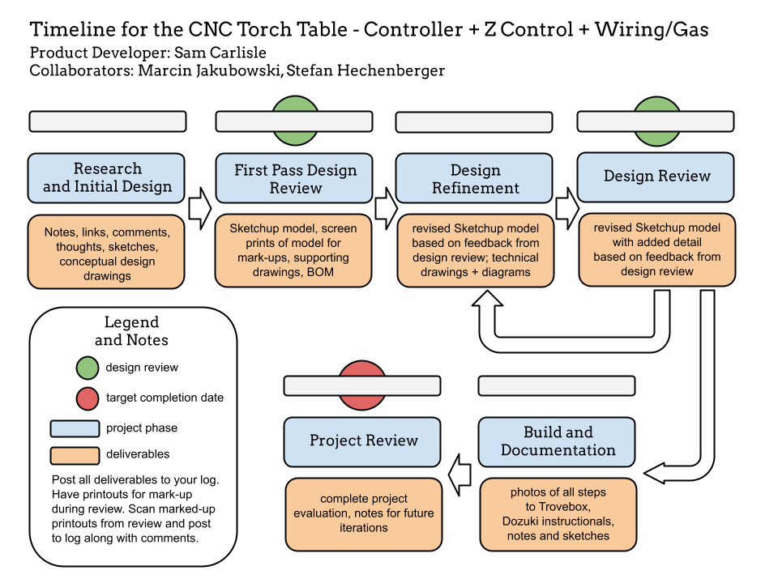
Open Source Ecology (OSE) project.
The main goal of the project is to create a collaborative and open-source platform for designing, building, and distributing industrial machines that can be used to establish sustainable local production systems. By providing easy access to the "Global Village Construction Set" – a collection of 50 essential machines for modern life such as tractors, brick presses, wind turbines – OSE aims to empower communities economically while promoting environmental stewardship.
In an age where transitioning towards local production, self-repair, sustainability, and open source hardware is crucial due to dwindling resources and increasing demand on our planet's ecosystems; the impact of OSE can be profound:
* Economic empowerment: Local communities gain control over their means of production by using low-cost machinery made from locally sourced materials.
* Environmental sustainability: Building durable machines using efficient processes reduces waste generation and resource consumption.
* Resilience: Communities become more resilient in the face of natural disasters or supply chain disruptions by relying on local manufacturing and repair capabilities.
* Knowledge dissemination: By adopting an open-source model, knowledge about these technologies can spread rapidly across different societies globally without being hindered by intellectual property restrictions.
* Economic empowerment: Local communities gain control over their means of production by using low-cost machinery made from locally sourced materials.
* Environmental sustainability: Building durable machines using efficient processes reduces waste generation and resource consumption.
* Resilience: Communities become more resilient in the face of natural disasters or supply chain disruptions by relying on local manufacturing and repair capabilities.
* Knowledge dissemination: By adopting an open-source model, knowledge about these technologies can spread rapidly across different societies globally without being hindered by intellectual property restrictions.
Overall, OSE has the potential not only to revolutionize how we view manufacturing but also contribute significantly toward creating a more environmentally friendly society that prioritizes localized economic development rather than centralized exploitation-driven industries.
Photos: OSE Factor E Farm
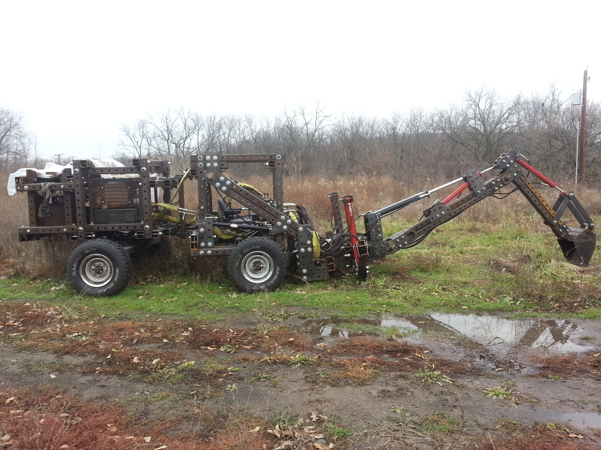
I contributed some CAD to the wiki for the first version of the backhoe arm and the team at OSE made a prototype which I got to see for the first time upon arrival at the farm for my dedicated project visit (DPV).
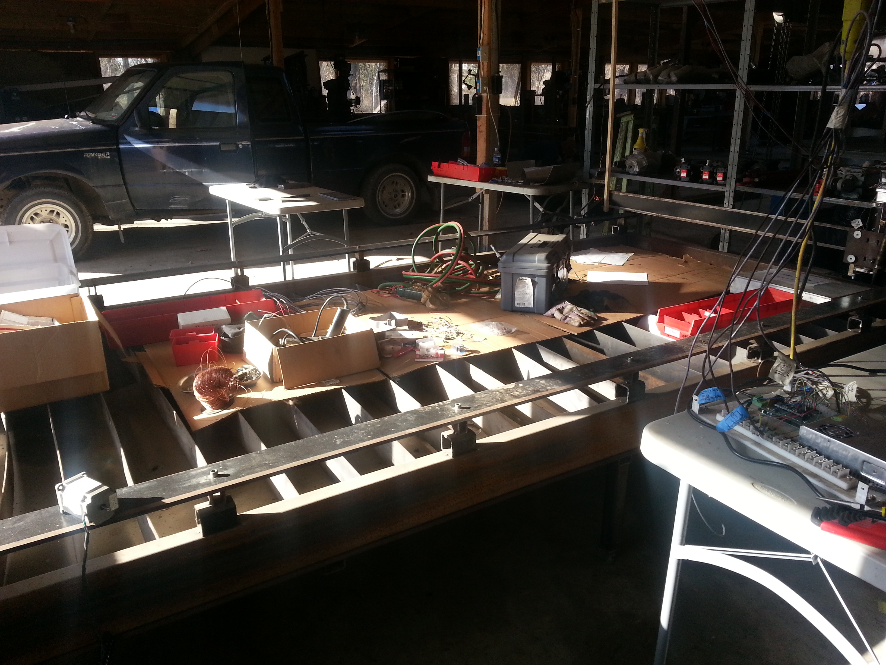
The subject of my dedicated project visit (DPV): further development of the CNC Torch Table
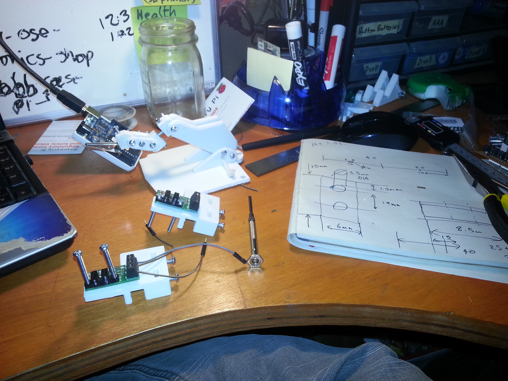
I designed and fitted a 3D printed mount with a trapped nut for an endstop circuit which was then securely attached to the metal X and Y axes of the CNC torch table.
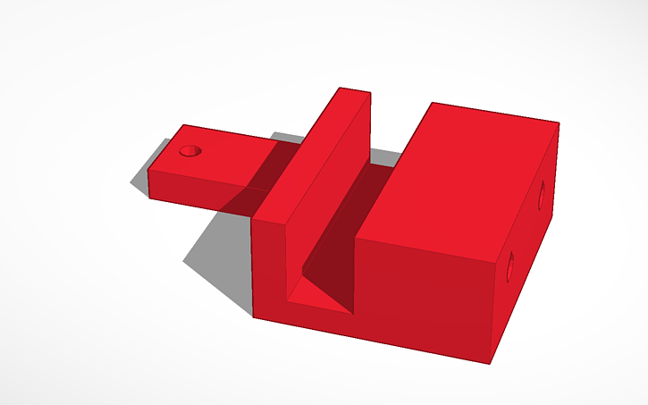
Rendering of my CAD for the y-min endstop mount
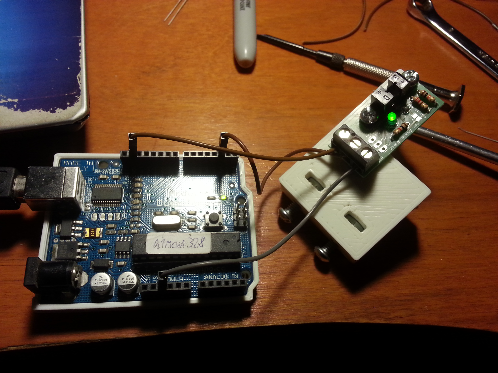
I tested the endstop circuit with an arduino to ensure that the hardware was still working and soldered correctly and to see if it was configured as normally open (NO) or normally closed (NC).
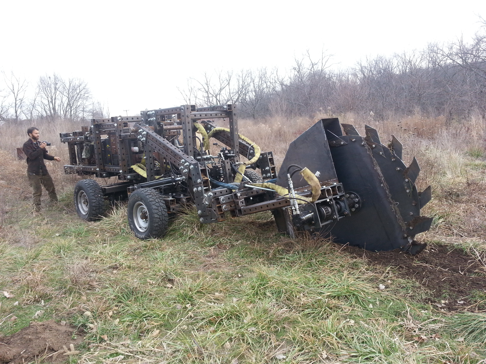
While I was there the rest of the team was working on a protoype of the Trencher which attaches to the front of the LifeTrac (open source tractor).
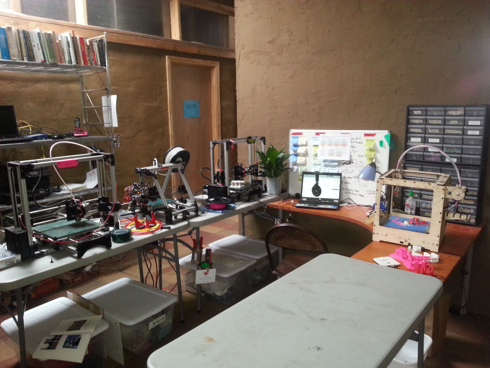
I did a complete overhaul of the communal design space inside the hablab (guest accomodation) which included fixing all the 3d printers (4 in total) and networking them to allow management of prints from a printserver (octoprint).
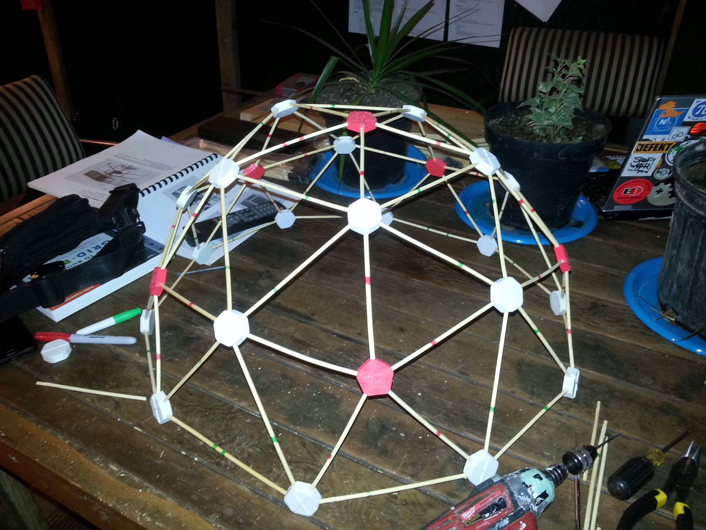
I built a small geodesic dome using wooden dowl rods and 3d printed vertices. There are multiple intentions fulfilled by printing this particular assembly / object: as an art installation and a decoration to inspire, as an engineering example of how the 3d printers can be used to make assemblies and prototypes (scale models). A Buckminster Fuller geodesic dome is a useful engineering teaching example because it demonstrates how to efficiently enclose space using lightweight, strong, and cost-effective materials. The design of the dome relies on triangular elements that distribute stress evenly across the structure. This results in an incredible strength-to-weight ratio and self-supporting properties. Geodesic domes are also energy-efficient due to their spherical shape, which optimizes air circulation and reduces heat loss. Additionally, they can withstand extreme weather conditions like high winds and heavy snow loads due to their aerodynamic shape. Overall, studying geodesic domes provides valuable insights into structural mechanics, material science, sustainability practices in engineering, as well as architectural innovation for creating efficient spaces with minimal impact on resources.
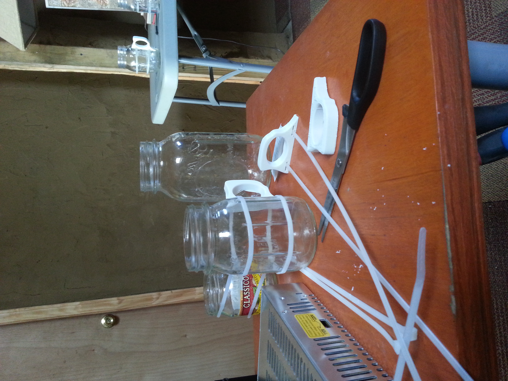
I upgraded some of the old mason jars in the kitchen with 3D printed handles to leave some more 'art objects' around the house with the intention to inspire future volunteers.
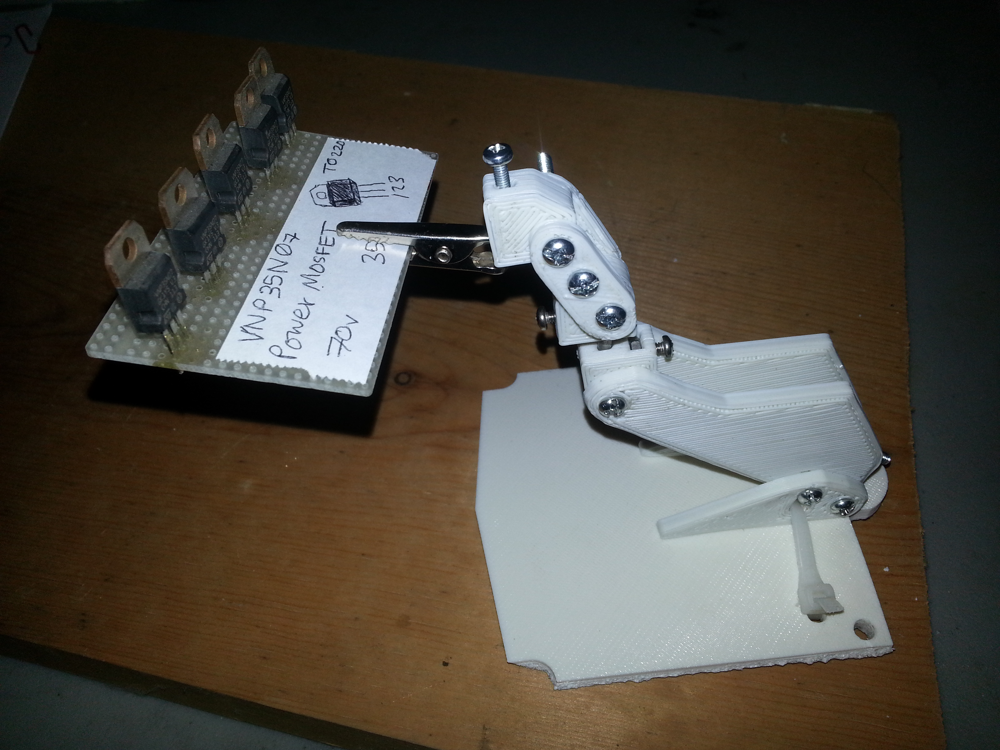
A multi part assembly which is perfect for holding circuit boards while you solder them.
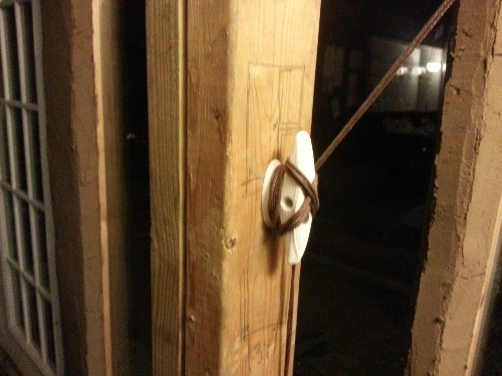
Some more upgrades for the hablab guesthouse. A cleat.
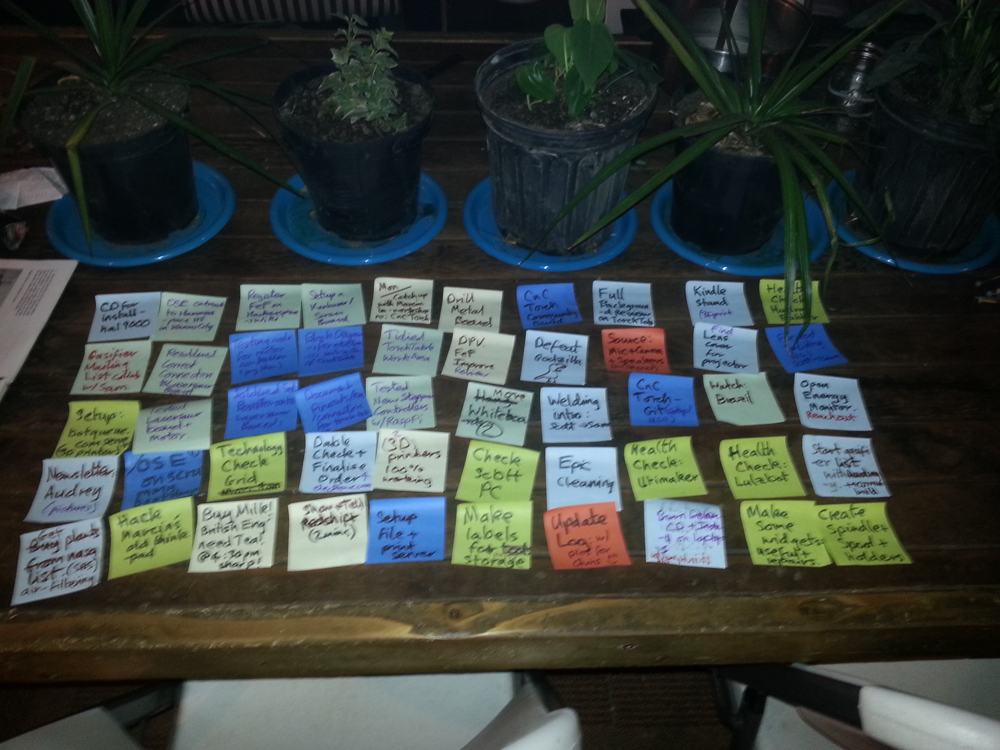
All of my completed tasks from the Kanban board.